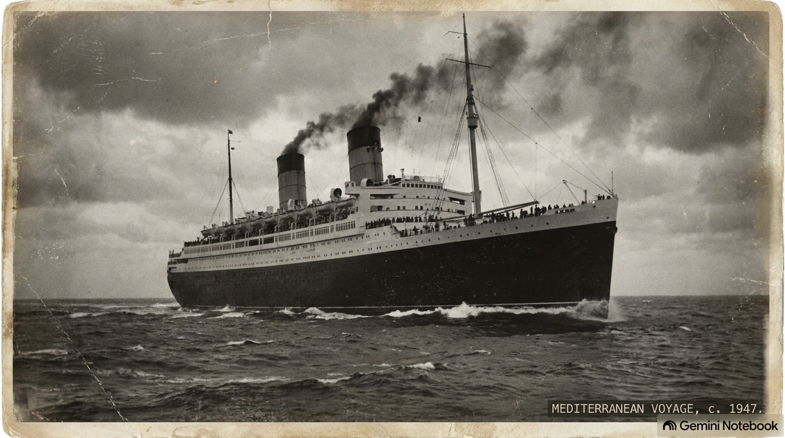

חברות וחברי משפחת 'הפאנים' היקרים,
על החופים האלה, שבהם נשברים גלי הים התיכון, נכתב אחד הפרקים הדרמטיים והמפוארים ביותר בסיפור הקמתה של מדינת ישראל. אל החופים הללו נשאו את עיניהם הורינו, סבינו ואולי חלקכם – למעלה מ-15,000 מעפילים שיצאו מבורגס שבבולגריה במבצע ההעפלה הגדול בהיסטוריה, כמענה מוחץ לשבירת הרוח של גירוש 'אקסודוס'.
הם עברו מסע תלאות ברכבות ברחבי אירופה ובבטן הספינות הצפופות, חלמו על חופי הארץ ושרו את "התקווה" בדמעות לפני הגירוש הכואב למחנות המעצר בקפריסין.
"כל שלט הנצחה הוא יד זיכרון חיה. הוא הגשר שיחבר בין המטייל בשביל לבין המעפילות, המעפילים והצוותים שעל הסיפון."
ארגון מעפילי קפריסין, כמיזם מרכזי לציון אירועי 80 שנה למחנות קפריסין ולקום המדינה, פועל להקים לאורך חופי ארצנו 30 שלטי הנצחה ונקודות מידע אינטראקטיביות לכל 142 ספינות ההעפלה. כדי להשלים את התקנת השלט של 'הפאנים' – אנחנו צריכים אתכם איתנו.
לתרומה מאובטחת והבטחת מקומנו על השביל:
רגע של עדות: עדות מעפילי 'הפאנים'
צפו בסרטון העדויות המיוחד של מעפילי 'הפאנים' ('עצמאות' ו'קיבוץ גלויות'):
"אחת המשחתות הבריטיות התקרבה לאונייה שלנו ממש כמעט נגעה בה, כמה חיילים בריטים קפצו ועלו לסיפון... פתאום התחילו לשיר 'התקווה'. כל האנשים שרו עם דמעות בעיניים. החייל הבריטי שבמקרה עמד לידי נעמד דום ונתן כבוד. אני זוכר את הרגע הזה – הוא עמד על יד אנשים ששרו בדמעות כשה הובילו אותנו לקפריסין."
תעודת זהות היסטורית: 'עצמאות' ו'קיבוץ גלויות'
| נמל ומועד יציאה | בורגס, בולגריה | 27 בדצמבר 1947 |
|---|---|
| מספר המעפילים | כ-15,000–16,000 מעפילים (מבצע ההעפלה המרוכז הגדול ביותר) |
| המסע והסיפון | צפיפות קשה בבטן האונייה, משמעת עצמית גבוהה ושירה על הסיפונים |
| המפגש בלב ים | כיתור ע"י 10 משחתות בריטיות. הושג הסדר לניווט ישיר לקפריסין למניעת אסון המוני |
| הגירוש לקפריסין | המעפילים היוו את הגרעין המרכזי והגדול במחנות קפריסין עד לשחרורם בעצמאות ישראל |